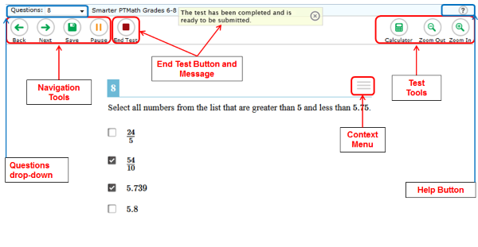

The following test tools are available:
| Global Tools | Description |
|---|---|
| Help [?] button | The [?] button at the top left will open this Test Information and Help page. |
| Zoom buttons | Use the [Zoom In] button to make the text and images bigger. Use the [Zoom Out] button to make the text and images smaller. There are four zoom levels. |
| Calculator button | Click the [Calculator] button to open the calculator.
Note: The calculator is available for grades 6–11 mathematics tests. The calculator is also available on some grade 4 Math NonPT tests. |
| Questions drop-down list | Click the box next to "Questions" to pick a test question or page to go back to. If you flagged a question for review, the word "marked" will appear next to the question number(s). For information about flagging questions, see "Flag (Mark for Review)" below. |
| Save button | This button lets you save technology-enhanced questions. This is an optional feature. If you do not click this button, your answers will still be saved.
Note: This button will not appear on pages that have only selected-response questions. |
| Pause button | This button lets you pause the test. When you pause the test, you will be logged out. (All your answers will be saved.) |
| Navigation buttons | The [Back] and [Next] buttons let you move between pages on a test.
|
| End Test button | This button appears after you answer all test questions. Click this button to start to submit your test. |
| Context Menu Tools | Description |
|---|---|
| Stimulus Expansion Tool | Some pages have a passage or activity on the left side of the screen. You can make this section bigger so that it's easier to read.
|
| Flag (Mark for Review) | Click the context menu and select [Mark for Review]. The question number will change and show a white flap in the upper right corner. |
| Glossary | Some words or phrases have a border around them. You can click these words to open the glossary. |
| Highlighter | Use this tool to highlight a section of text in a passage or test question. The highlight color is yellow. You cannot highlight answer options.
|
| Notepad | Each question has a notepad that allows you to save a note or comment about the question. To open the notepad, open the context menu and select [Notepad]. |
| Strikethrough | For selected-response questions, you can “cross out” an option. This may help you focus on what you think may be the right answer.
|
| Tutorial | Each test question has a video tutorial. The tutorial explains how to answer that type of question. Open the context menu for an item and click [Tutorial]. |
For Performance Task Tests:
If you are taking a test that includes performance tasks, you have no pause limit. You may pause the test for as long as you need to.
If you have Print-on-Demand or Text-to-Speech turned on for your test, read this section.